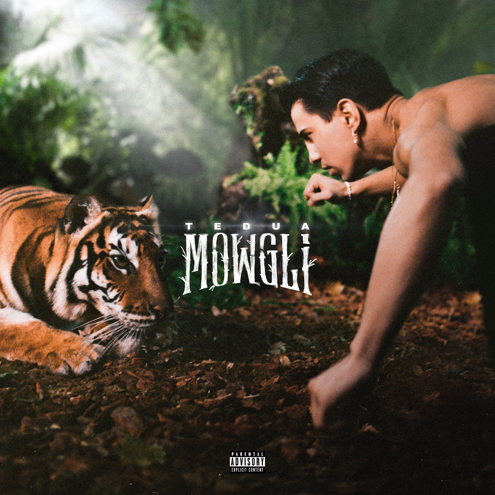

Menu
Questa e' la pagina riguardante Il Disco 2 dell'Artista Musicale Tedua. Il 20 novembre 2017, dopo aver annunciato l'intenzione di voler presto pubblicare un secondo album in studio, viene pubblicato il primo singolo La legge del più forte, seguito il 6 febbraio 2018 dal secondo singolo Burnout. L'album, intitolato Mowgli, è stato pubblicato il 2 marzo ed è stato accolto positivamente dalla critica specializzata, che ne riconosce l'innovazione rispetto sia alle sonorità trap di album come Rockstar di Sfera Ebbasta sia alle sonorità del classico hip hop. L'album ottiene inoltre un buon successo a livello di vendite, raggiungendo la vetta della classifica FIMI Album.

Sono Presenti i Link di Interesse